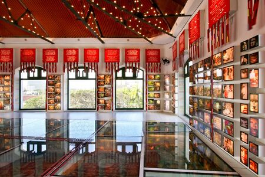

Paço do Frevo
Venha conhecer Recife!
O Paço do Frevo é um museu dedicado ao ritmo musical e dança que surgiu em Pernambuco há mais de 100 anos.
A construção é mais recente e fica localizada no bairro do Recife, também conhecido como Recife Antigo.
O museu ocupa um prédio histórico no bairro do Recife Antigo e conta com exposições interativas, oficinas, shows e um acervo de mais de 12 mil itens relacionados ao frevo
É uma opção de onde passear em Recife e uma oportunidade para conhecer mais sobre essa expressão cultural pernambucana que é Patrimônio Imaterial da Humanidade.
Texto escrito por João Guimarães, extraido do site CNN 